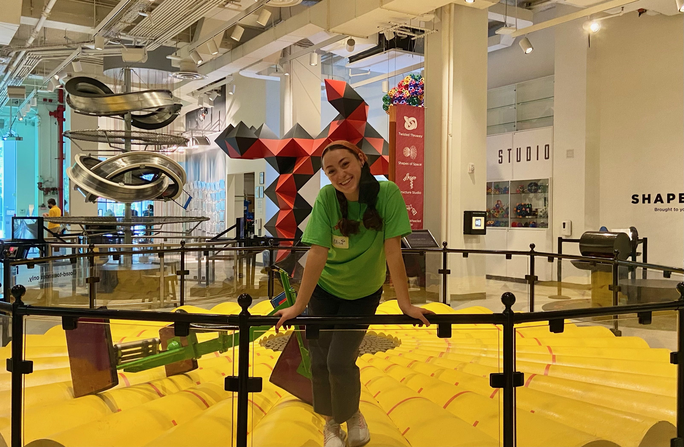

About Me

Hello, my name is Ellise Parnoff! I am a Master of Science in Data Science student at Columbia University’s Fu Foundation School of Engineering and Applied Science. Earlier this year, I graduated from Fordham University, where I maintained a GPA of 3.7, studying Mathematics and Computer Science.
My career goal is to use data science for good. One way I seek to do this is by utilizing my knowledge of mathematics and programming through data science to improve social justice issues. I gained experience with this last summer when I had the opportunity to assess gender and racial bias in graduate school letters of recommendation using machine learning and natural language processing.
One of my biggest strengths is my ability to communicate my technical knowledge. Through my time working at the National Museum of Mathematics, I gained thorough experience communicating multiple advanced math concepts to a wide range of museum-goers.
Above all, I am a highly passionate hard worker who brings 110% to every task. I am currently looking for an internship for summer 2024. I am eager to put my passion for STEM to work.
My skills include, but are not limited to: C++, Github, Google Colab, Google G Suite, Jupyter Notebooks, Linux, Machine Learning, Matlab, Microsoft Office Suite, Python, R, Written and Verbal Communication.
Feel free to contact me at any time with any inquiries or requests! I'd be happy to chat!
Research Interests: Astronomy, social justice
Research
Publications:
Parnoff, E., Raghuram, A. Ramanujan's congruence primes. Involve, a Journal of Mathematics. 2023.
For this project, I worked to find new instances of special prime numbers named Ramanujan Congruence Primes.
To do this, I designed Python programs to compute multiple advanced mathematical formulas. Through our research,
we have proven that it is possible to find additional Ramanujan Congruence Primes.
Zhao, Y., Wang, T., Mensah, D., Parnoff, E., He, S., Weiss, G. A Quantitative Machine Learning Approach to Evaluating Letters of Recommendation. HICSS-57. 2023.
For this project, I created predictive models with natural language processing and machine learning methods
to assess gender and racial bias in graduate school letters of recommendation. Our work has since been published in the
Hawaii International Conference on System Sciences ‘24.
Projects
Experience

ROOT Program Participant at the National Museum of Mathematics (May 2022 — August 2022):
- Achieved selection to the highly competitive 2022 ROOT (Real Operational Outreach Training) Program
- Communicated advanced ideas to diverse audiences (ages ranging from 2-80 with various backgrounds)
- Engaged with high-profile mathematicians to gain a deeper understanding of advanced math concepts
- Collaborated to enhance the accessibility of math education within the local community
Research Assistant Fellow at Fordham University (June 2022 — June 2023):
- Created predictive models using natural language processing and machine learning methods to assess gender and racial bias in graduate school letters of recommendation
- Completed 300+ hours extracting, preprocessing, and analyzing a dataset with over 4000 entries
- Collaboratively contributed to a published research paper
- Maintained strong virtual communication with a research team of two professors and two students
Calculus Grader at Fordham University (September 2022 — Present):
- Assess and grade assignments on a weekly basis for two calculus classes, each with 30 students
- Analyze and evaluate various written math solutions to determine accuracy
- Collaborate with professor to discuss class progress and make recommendations
- Gain a deeper understanding of fundamental math concepts
Orientation Leader at Fordham University (August 2022):
- Individually led a group of 18 incoming freshmen in various discussions to help them adjust to college life
- Collaborated with fellow orientation coordinators to create engaging activities for the entire freshmen class
- Facilitated an open discussion about diversity, equity, and inclusion on campus
Contact
Email: edp2139@columbia.edu
Location: New York, NY 10025